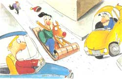

Peril is a relative thing. I don't mind bungee- jumping, skydiving, or bull-riding on a warm day, but it's arguably insane to risk one's life for sport when the temperature falls below the comfort zone. Adrenaline flows more sluggishly in extreme cold, which delays the internal warning that you've pushed the envelope too far.
But in winter, there is an ecstasy that marks the summit of life, and its name is Danger. People ride up the sides of tall mountains, buckle on skis, aim their bodies downward, and are taken to hospitals by the carload. They strap on ice skates and glide too close to a gracefully whirling skater, who slices their carotid artery. Call up any hospital and ask for the daily report: how many fractures on the slopes before noon...the number of spleens harpooned on ski poles...or the skate-laceration count. But mention toboggan injuries, and after a respectful silence your call will be transferred up to Intensive Care, because toboggans are multiple-victim and -injury toys, open-face starter coffins.
If the urge to frolic in snow comes over me, I get down a book by Jack London, settle into a warm chair with a brandied hot chocolate, and enjoy a few stories about hypothermia and freeze-dried sourdoughs: In one well-known tale, the protagonist is survived by a pooch of questionable loyalty. Once more, I remember my faithful Dog and the deadly toboggan.
Dog-that was his personal name, as well as his species-was my friend, and as loyal a flop-eared setter as ever accompanied a boy through the wasteland of a Midwestern city in the early 60s. He was incredibly smart, making his toilet on every lawn in the city except ours. He did not know the meaning of fear, but he certainly understood the concept of caution.
In our neighborhood lived a budding criminal named Mickey, who used to beat me up in the schoolyard just for the exercise. He was also fond of coaxing tiny children to destroy with his toboggan. Later inlife, he found a permanent home in jail. One winter day, he hailed me down as Dog and I were out strolling. A deep snow had fallen, and he was dragging his toboggan behind him. "You want to go for a ride?" Mickey asked with unnatural friendliness. I shrugged, wondering what the hell. But he persuaded me that the toboggan needed at least three bodies for maximum performance, and so we hiked for blocks into unfamiliar terrain. At length we found ourselves at the top of a steep hill on a wide avenue.
"They've closed it off to cars," he assured me. "Okay, you sit up front and take the rope. Get your dog on and let's go." I should have smelled rodents, but, like most sociopaths, he was a smooth talker. Standing alongside. Dog looked at the toboggan and then at me. He shook his head emphatically. Mickey sneered. "Is your dog stupid? Or just yellow?" Dog was wiser than I, but he did not understand peer pressure. "C'mon, boy," I ordered. "Get on." I patted the wood in front of me, and Dog obediently got on the hell machine.
Mickey pretended to take the rear seat, but just as we started off, he gave my back a treacherous shove and dismounted, laughing as we shot down the hill. I remember vividly the moments that followed: Dog's ears flying straight behind, a chill wind whistling in my ears, speed increasing, destination unknown.
Far from being closed off, the street had lots of cross traffic. We zipped through a dozen stop signs, cars honking, skidding, and swerving around us. Dog turned his head and licked my face as if to say, "You realize, of course, we're dead."
But one of the peculiarities of a toboggan is that it has no sides. If one sincerely wished to live, it can be arranged by simply falling off and losing some skin. I dived overboard. Dog would have no doubt stayed with me to the end, but when he saw my body tumbling end over end, he also ejected. We slid up against the front wheels of a truck, which stopped just in time. Mickey was watching from the top of the hill, and the ghost of his guffaws drifted down to us. Dog and I trudged home, limping and bruised but alive, as he retrieved his toboggan.
A few days later, someone built an indestructible snowman, whose core was a fire hydrant. Mickey came along, and the rest is history. He broke his collarbone in three places and shattered his nose and toboggan into splinters as Dog and I watched from a vantage point, smiling a lot. I could have forgiven his attempt to kill us, but he shouldn't have called my Dog yellow. Or stupid; after all, Dog gave me the idea.
|
 ILLUSTRATION ? KEITH BENDIS |
|
|